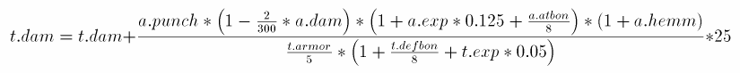
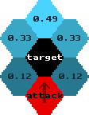

documentation
2000-08-27
This file describes various aspects of Advanced Strategic Command's engine and is thus platform independent. Information about compiling and installation of ASC can be found in separate files, check out the contents of the doc directory.
Although this is not the first release of ADVANCED STRATEGIC COMMAND and its documentation both are far from being completed.
The text files are more a collection of notes than a complete and well structured documentation.
The central place for everything new regarding the project is the website:
Everything that is mentioned there will not be repeated here.
Some useful features in ASC that are hard to find:
Updated attack formula and reaction fire to reflect the changes of ASC1.2.0
Renamed file to ASC.HTML
Updated documentation to reflect the linux port
Rerelease with hexagonal version only and new graphics
Cleaned up the HowTo: PBEM section
Moved supervisor to the features section
Hexagonal version added
Added paragraph about the construction of buildings
"English Release"
This program is free software; you can redistribute it and/or modify it under the terms of the GNU General Public License as published by the Free Software Foundation; either version 2 of the License, or (at your option) any later version.
This program is distributed in the hope that it will be useful, but WITHOUT ANY WARRANTY; without even the implied warranty of MERCHANTABILITY or FITNESS FOR A PARTICULAR PURPOSE. See the GNU General Public License for more details.
You should have received a copy of the GNU General Public License along with this program; see the file COPYING. If not, write to the Free Software Foundation, Inc., 59 Temple Place, Suite 330, Boston, MA 02111-1307 USA
There are a few problems in ASC that are not fixed yet because they require some major rewriting of the engine or involve quite some time for only cosmetic changes:
If you find any bugs in the game, contact me and I will try to fix them. You should include a description how the bug can be reproduced, what it does, which version (date) of the game you are using and your operating system. An auto save function is included in the game: at the end of each turn it saves alternating to the files autosav1.sav and autosav2.sav . These savegames may be useful in reproducing the bug.
But please make sure it is really a bug:
I don't want to discourage anyone from making bug reports but please note that I must somehow reproduce the bug to fix it. Just saying "sometimes something does not work" is useless, really.
The best thing you can do is to get the source code and fix the bug yourself :-)
If the DOS-version crashes or exits with some errors before the graphic initialization so you can not see the title screen, please send me the VESA parameters of your graphic card. In the TOOLS directory there is a program called TESTVESA.EXE . Please send me its output (to redirect it into a file run "TESTVESA > FILENAME").
Suggestions for new features, improvements or changes are always appreciated.
If you find any bugs in the map editor, contact me also, but I will only fix major bugs immediately, the other are noted and fixed some time later.
It is very recommended to save regularly and in different files in the map editor.
You can also access the following information in the help menu of ASC.
Make your moves and press end turn when finished.
I describe here some features of the game in no specific order. Most important aspects of the game should be covered here, but if something is still unclear, please notify me. I have designed and coded most of the game and know every aspect of it, so it is possible that I have forgotten something that seems obvious to me but to no one else...
There are 4 different types of mines
The first two are used on land, the last two on water.
The strength of mines is determined by a base strength that depends on the type of mine and the strength of the weapon with which they were deployed. A weapon strength of 64 results in the mines having the base strength, with a weapon strength of 128 they are twice as powerful.
Depending on the map parameter (which can be set for each map in the mapeditor) you can put more than one mine on a single field. The punch of each further mine adds only 2/3 of the punch of the previos mine. For example:
first mine: punch 120
second mine: punch 160
third mine: punch 140
Total punch: 120 + 160 * 2/3 + 140 * 4/9 = 288
You can move over the mines that you laid yourself, but the movemalus of the field is increased by 50% for each mine. For example, if there are three mine on a single field which has a movemalus of 12, the movemalus is increased to 12 + 3 * 12/2 = 30
By default mines have an unlimited lifetime. But with a set of gameparameters you can sepecify the lifetimes for each type of mine.
See also the file MAKETECH.TXT in the editor package.
When a unit is conquered or is given to the player by the map and this unit is based upon technologies that are not yet developed, you can dissect the unit in a research facility. By doing so you get research points for every technology, even if it is not yet researchable. The unit does not survive of course.
If you are researching a technology that is required by a unit you are dissecting, you will always get 1/2 of the researchpoints that are required to research this technology
If you are not developing this technology at the moment you will also get 1/2 the researchpoints that are needed to research this technology if this is the first time you dissect a unit that requires this technology.
If you dissect a unit that requires a given technology and you already got some researchpoints by dissecting another type of unit you will get 1/3 of the technologies researchpoints.
If you dissect a unit that requires a given technology and you already got some researchpoints by dissecting the same type of unit you will get half the researchpoints that you got the last time when dissecting this unit (50% for the first unit, 25% for the second unit and so on).
Internally ASC measures all distances with a higher precision than the values that are being displayed. The distance between two neighbouring fields is 10. For the output the distances are divided by 10 so the readable value of a distance is exactly the number of fields. In the various editors distances have to be specified usually in the internal dimenstion.
An Aircraft usually needs several fields to change its level of height. The number of fields needed is called take off distance.
Most planes have a take off distance of 2 to 4 fields, helicopter and vertical takeoff planes have 0, they can start an land on one field.
A plane should have a movement on ground level of at least (take_off_distance +1)*12 to allow it to leave a building and take off in one turn.
After take off an aircraft has always enough movement to move one field further, to free the runway for the next plane taking off.
Aircraft carrier half the take off distance. Since an aircraft carrier is one field large by definition, only planes with a take off distance of 2 or less may land or take off.
An flying aircraft needs, when there is no wind, as much fuel per turn to stay in the air as is required for flying one field. If there is wind, it uses as much fuel as it needs for flying the distance the air moves per turn. Is the plane moved, the increased fuel consumption will be calculated together with the reachable fields (can be recognized by the form of the reachable fields). Has the plane spent all movement points for travelling, no further fuel consumption will be calculated at the end of the turn.
can be different at different height levels, its force as well as its direction. Wind is only existent at the height levels "low level flight", "flight" and "high level flight". When designing a map, a uniform wind should be the norm.
The compasscard and the beam on its right side display the direction / force of the wind in the actual altitude of the unit. The actual altitude is indicated by the icon on the left of the compasscard. If you click on that icon you can change the altitude that is beeing displayed.
If the cursor is over an unit, the wind for the height the unit is on will be displayed. Some units (especially airplanes and small ships) do not survive strong storms.
The bar indicating the wind-force becomes yellow, when the wind-force is more then 66% of the deadly speed, and becomes red at 90%.
Units can be repaired by some buildings and by some other units. Does a unit repair another unit, the costs are: productioncost * ( damage / 100 ) / 2 . Fuel and material is used.
It is cheaper to repair units in buildings: productioncost * ( damage / 100 ) / 3 . Energy and material is used.
Some Units (not very much) have an "autorepair"-function, enabling them to repair themselves. The amount of damage they can repair each turn is specified for each unit. The repair costs are the same as if another unit would repair them.
When repairing units, their experience is reduced by one if each time their damage is reduced below one of these boundaries: 80, 60, 40, 20. Examples:
If Buildings are damaged, most can repair themselves. The efficiency is the same as if units were repaired by the building.
Buildings can be destructed by all vehicle that are capable of constructing buildings. The construction unit can only destruct buildings if it has not done anything else this turn. 1/3 of the material that was needed to construct the building can be recycled and will be added to the construction vehicle. The destruction requires 10 * fuel_usage_of_unit fuel.
Units can be destructed in buildings to get productioncost_material * (100 - damage/2 ) / 100 * efficiency material. Normal buildings have an efficiency of 1/5, building having the recycling-function have an efficiency of 1/2 . The Icon to destruct a unit is named "recycle" in normal buildings too.
There is no luck in combat or anywhere else in the game. It is completely deterministic.
The basic principle for calculating the view of units and buildings should be clear, Advanced Strategic Command is not the first game using the so called "fog of war". But we have implemented some enhancements:
Most units (some more, some less) jam the radar of enemy units to hide themselves and nearby standing units. If there are several radar jammers, their jamming is added (this was already used in Battle Isle 2), but the radar is also added. If your enemy blocks your sight with several radar jammers, you have to counter with several radar vehicles.
Enemy submarines, satellites and Mines cannot be seen by most units. But some have the "sonar", "satellite view" or "mine view" functions, enabling them to see this kind of enemy units. Buildings can always see mines and satellites (may be changed in the near future), only for submarines they have a "sonar" function.
The jamming and view calculation works this way: First all jamming is calculated by going through all enemy unit with jamming capabilites and adding to all fields for each vehicle the jamming strength minus the distance to the unit. So a unit with a jamming of 12 does only affect the fields next to it.
In the second step the view of all own vehicles and those of allies who have enabled "share view" is calculated similarly, only the strength is not only reduced by the distance between fields but by the jamming of the terrain too.
The third step is to compare the jamming and view values for each field: If the view value is greater than 0 and larger than the jamming value the field will be visible.
So it is not a bug when single, isolated fields become visible in the void, it is caused by the jamming of several enemy units.
is used to attack enemy units as soon as they approach. While reaction fire is enabled, a unit won't execute any commands except the command to attack, but it will attack any enemy unit automatically that comes into range and view.
This means that an enemy unit will NOT be attacked if it is already in range and view, even if it comes any nearer. Since you have already seen the unit and can attack manually, the single shot of the reaction fire is preserved for any approaching units that were not attackable yet.
After reaction fire for a unit has been enabled this unit can immediately attack, except when it has the wait-after-movement flag and has already moved this turn.
After disabling reaction fire the unit has to wait for the next turn to move again.
A unit that is being attacked by reaction fire will not retaliate.
ASC can be played in two different "resource modes":
The Battle Isle Resource Mode is, as the name suggests, very similar to Battle Isle: All buildings can generate resources. The material is only available in the building it was produced in, while energy is stored in one global pool for all your buildings. Depending on a map parameter fuel is either handled like material or like energy. The amount of resources that is produced every turn has be set in the map editor when designing the map.
Some detailed information about the parameters of buildings is available in the mapeditor on the "building values" dialog box.
Mining station extract resources from the ground around their entrance, the fields one after the other. With increasing distance from the entrance the amount of extracted resources gets less and less. The graph on the mining-page in buildings shows this. The maximum distance to extract resources from is 10 fields.
The maximum amount of resources a mining station can extract per turn (distance 0 ) is specified for each type of building. The efficiency ( = resources_stored * 1024 / extracted_resources ) is specified there also. When designing a map the maximum extraction of a building can be further decreased.
You can search mineral resources with some units, the radius for the search is specified in the vehicle type. There are two functions a unit can have: "drill for mineral resources manually" and "search for mineral resources automatically". When designing units the manual search should only be used with ships and vehicles, while the automatic search is possible with ships, airplanes and even satellites.
The mining stations can see the mineral resources to and at their current mining position too.
With the key "1" you can toggle whether the resources are displayed in the main display as numbers, as bars, or not. The first number or bar shows the material, the second the fuel (in the game we generally use the order energy / material / fuel ).
Normally you don't have to change anything there. But if an enemy is going to capture a building that stores resources, you can move all resources out so they are stored in other buildings connected to the same net. You should also prevent any new produced resources from being stored there after the end of the turn by enabling "stop storing resource".
In the case that the enemy is going to cut the connection of one building to your net, but you will need resources in that particular building you can fill the tanks of this building by enabling "store resource" and prevent extraction of these resources through the net by enabling "stop resource extraction".
The available functions are:
Enemy buildings can be conquered with any unit that has the "conquer_buildings" function. Neutral buildings and enemy buildings having a damage of 80% or more can be conquered by any ground based unit.
Units that have the "attacked"-flag set cannot conquer buildings. The attacked-flag is set after a unit has attacked and is reset at the beginning of each turn. But a unit that as attacked cannot move further anyway. But the "attacked"-flag ist also set after a unit is produced (so it is not possible to produce a unit, move out of the factory and attack in one turn) and after an aircaft or paratrooper has just landed.
Every land based unit is assigned to one of the following 9 categories:
Every terrain has 9 different move mali, one for each category. When a terrain is edited and not all move mali are specified, the "default" value is used for the remaining categories.
Roads have a move malus 10, which must be the least value since it is the distance between 2 fields. If a terrain has a value of 20 units can move only halve as far as on a road.
Items of the Object-Layer have two arrays to modify the move malus values of the terrain they are build on. There's "movemalus_plus" which can be positive or negative and will be added to the move malus of the terrain, and there's "movemalus_abs" which will replace the values of the terrain.
If "movemalus_abs" is specified then "movemalus_plus" will be ignored. If "movemalus_abs" has a value of -1 it will be ignored.
When attacking an unit 5 bars display various parameters of the fight. From outside to inside that is:
The attack formula is:

The abbreviations stand for:
a : attacking unit
t : target
dam : damage
exp : experience
hem : hemming factor
atbon : attack bonus
defbon : defense bonus
Note that the defense- and attackbonus displayed in the terrain information window are already divided by 8.
The
hemming factors are:

Only units that can attack the target contribute to the hemming. Units that already have attacked don't contribute.
The alliances can be set in the lower table of the alliance dialogbox. If two players are allied, a green X is set where the row of one player and the column of the other player intersect. To change this status, you can perform two actions: you may formally declare war, by setting the status to a red dot. The other player will be informed that you declare war on him. You may attack this player in the next turn (so he can prepare for your attack), when the status icon changed to a red X.
Or you can set the status directly to a red X and sneak attack him immediately. ALL players will be notified about this.
To ally with another player set the status to a green dot. This player will get a message that informs him about your peace proposal and he may accept the peace by setting his status to a green dot too. The next time you are at the turn the alliance is set indicated by a green X.
Replays allow a player to review the moves that were made by the other players before him. Only the moves of the last turn are recorded to reduce the size of multiplayer files.
Replays can only be used in Multiplayer games and have to be enabled in the Multiplayer-Setup dialogbox (where the CRCs can be enabled too) at the start of a game.
The replays are NO accurate record of every action that happened. Only unit movements and attacks are recorded, but parameters like fuel and ammunition should be ignored since they do change during a replay. But this does not have any impact on the real map the player makes his moves on.
The replays of each player are played independent from another and you have to exit each of these replays manually. The color of the player whose moves are replayed can be seen in the unit information box at the right side of the screen.
A building can be constructed in the game using a building constructor. The building constructor requires fuel and material for this task. The amount of these resources that is needed is specified in the building type file. If a building in constructed in several stages, the specified amount of resources will be needed for each stage.
Factories build during the game can not produce any units!! This will change sometime, but I don't know yet which units shall be buildable.
Newly build Mining stations, Oil rigs, Research centers, Power plants etc. can produce as much resources / research / etc as the best building of the same type that you already have. This means it will be completely useless to build any of these building types if you don't already have one.
Any thoughts about how we can improve this are always welcome. I know that this is not the perfect solution.
As a supervisor you can switch other players to computer and back, change their position (the computer on which they play) and so on.
Is no supervisor password specified this functionality will be completely disabled. Every player can recognize whether supervisor functionality is enabled or not by the status of the "supervisor"-button in the alliance dialogbox.
A Multiplayer game (the .eml file) can always be loaded with the supervisor password to change the above mentioned settings.
Without logging on as supervisor a player can only switch himself to computer or off and he can change his or the next players position.
Is it possible to take units from one campaign map to the next ?
No, this is not possible and it will not be possible. Such a function would be a positive feedback loop: If you play well, you will carry more experienced units to the next map. This causes the next map to be easier, so you will end up even better and will take even more units that are more experienced to third map...
If you lose a mission, you can't be sure that you did a mistake this mission. You might think that you played badly in the mission before, so perhaps you should play that mission again too, to finish it with better units. Or perhaps you should even re-play the last 5 missions? These doubts can ruin the fun playing a game, something I experienced in Homeworld.
To avoid this kind of positive feedback loop, each map will be self contained and your performance in one map will not effect the next map. It might however be possible that a campaign branches: The next map will be chosen depending on the (clearly defined) objectives that you achieved. This is different because you will know in advance that you have a choice and you will never be uncertain if you were "good enough".
Having said this, I will definitly NOT implement anything else. So there is absolutely no need for any further discussion about the subject.
Martin Bickel, 2002-11-06